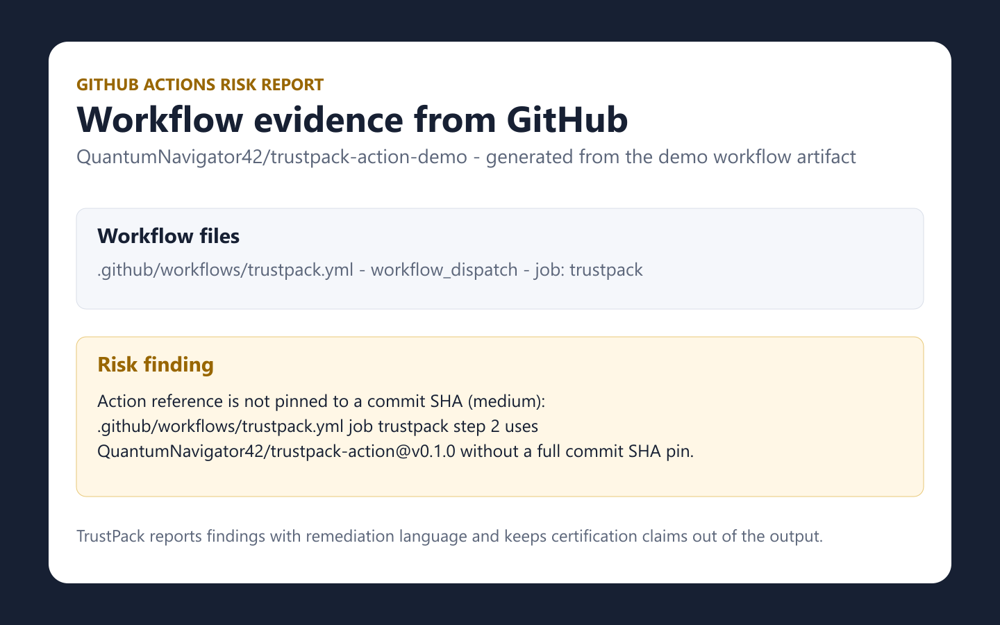

Executive summary, repository evidence JSON, security controls, dependency inventory, workflow risk report, remediation checklist, and questionnaire starter.
What It Generates
Branch protection, rulesets, CODEOWNERS, SECURITY.md, Dependabot, README, license files, releases, tags, manifests, and workflow YAML.
The Action runs in GitHub Actions and writes artifacts. There is no telemetry, customer data storage, or runtime OpenAI dependency.
Public Demo Output
The sample pack was generated by the public v0.1.0 Action in this demo repository.

A paid Pro Pack checkout is prepared as a final owner-account step. The free GitHub Action, public release, demo workflow, sample output, and launch assets are already public.